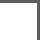
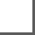
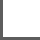

Break the Grid
  Perfection is overrated. Every clean line and flawless layout feels the same. Anti-design celebrates the glitch, the misalignment, the things that don’t fit. Because when you stop chasing beauty, you start creating truth.
The Chaos Knows Better
There’s structure hidden in the noise. Every misplaced element tells a story that balance could never tell. Chaos isn’t the opposite of order — it’s the part of it we pretend not to see.
AntiDesign started as an accident — a protest against
predictability. It’s not about making something ugly, but about
breaking the illusion of control. Design has become a language
of comfort, and this is a reminder that discomfort is where the
real ideas live.
Here, the rules are rewritten every time the cursor moves. A
shape doesn’t have to align. A color doesn’t have to match. If
it makes you stop, question, or feel slightly uneasy — it’s
working.
Anti-design is not chaos for the sake of chaos. It’s a quiet
rebellion against the polished emptiness of trends. A reminder
that imperfection is human, and design should be too.
We don’t want to please your eyes — we want to challenge your
mind. Every pixel has a purpose, even when it looks like a
mistake. Maybe that’s the point: to find meaning in the noise
and beauty in the wrong places.